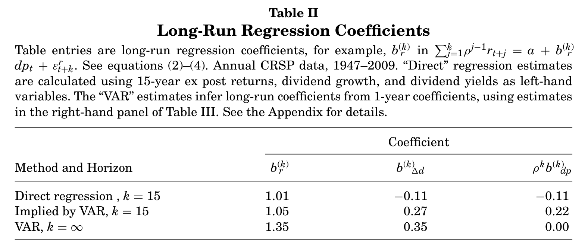
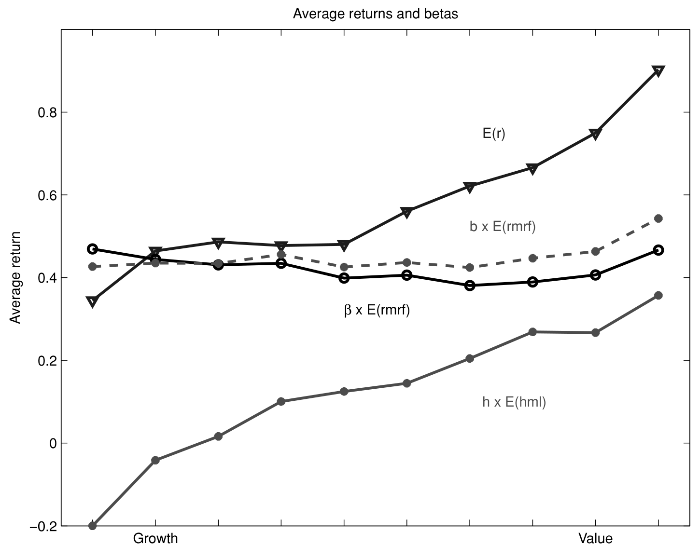
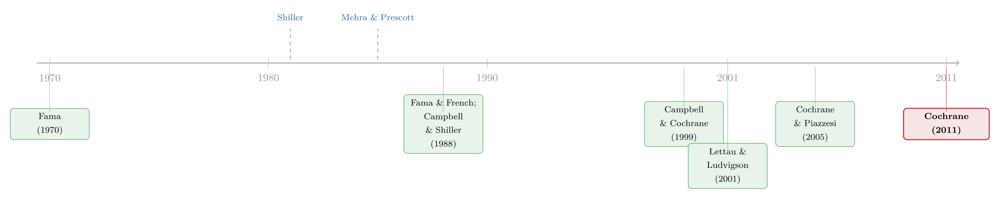
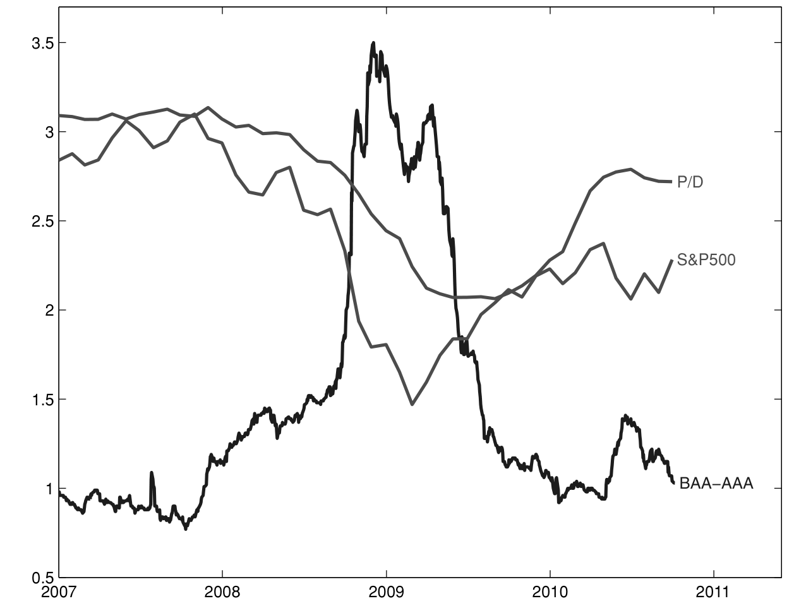

贴现率：资产定价的中心议题
这篇博客读的是 John H. Cochrane 在 2010 年美国金融学会主席任上的演讲稿 Cochrane (2011, Journal of Finance)。它只讲一件事：四十年前我们以为股价里的波动来自对未来现金流（股利）预期的变化，而收益率本身不可预测；今天我们发现几乎是反过来的——价格股利比 (price-dividend ratio) 的全部波动都对应贴现率（折现率、预期收益率、风险溢价是一回事）的变化，没有一点来自股利增长的预期，也没有一点来自"理性泡沫"。一句话："贴现率变化"已经取代"市场有效性"，成为组织当代资产定价研究的中心问题。
1 一个被翻转的世界观
先讲一个悬念。
1970 年，Eugene Fama 写下那篇著名的《Efficient capital markets》，给整整一代资产定价研究定了调子：把研究组织在"预期（expected）"这个词上，去检验市场是否有效。在那个世界观里，收益率是不可预测的——如果你能从今天的信息预测出明天的超额收益，那就是套利机会，就是市场无效。于是当人们看到股价相对股利高得离谱时，自然的解释只有一个：市场预期未来的股利会涨。价格高，是因为现金流的好日子在后头。
四十年后，Cochrane 站在主席演讲台上，告诉同行：这套直觉整个错了。不是错了一点，是几乎完全颠倒。我们以为是零的东西其实是一，我们以为是一的东西其实是零。
这就是这篇演讲的全部张力所在。它不是一篇有新数据、新模型的论文，用 Cochrane 自己的话说，"This paper is more an agenda than a summary"（这更像一份议程而非总结）。但它把过去三十年散落各处的实证事实拧成了一股绳，并给这股绳起了个名字：贴现率。
接下来，我想顺着他的叙事走一遍：先看一个简单到不能再简单的回归，再看它在长期视角下如何"反转"，然后看这个反转如何横扫几乎所有资产市场，最后落到他真正想说的那个核心上。
2 从一个简单回归说起
故事的起点是一个一行就能写完的回归。把 CRSP 价值加权指数的超额收益 \(R^e_{t\to t+k}\)（相对 3 个月国库券）对期初的股利价格比 \(D_t/P_t\) 做回归：
$$R^{e}_{t\to t+k} = a + b\times \frac{D_t}{P_t} + \varepsilon_{t+k}$$
用 1947–2009 年的年度数据，结果（Table I）是这样的：1 年期 \(b=3.8\)，\(t=2.6\)，\(R^2=0.09\)；5 年期 \(b=20.6\)，\(t=3.4\)，\(R^2=0.28\)。
如果你只盯着那个 \(9\%\) 的 \(R^2\)，你会觉得这没什么了不起——确实"显著"，但解释力寒酸，而且这种回归有一堆偏误和数据挖掘 (data snooping) 的嫌疑。
但 Cochrane 在这里下了第一步关键棋：\(R^2\) 在这个问题里根本不是衡量经济意义的好尺子。为什么？因为收益率里永远有大量无法预测的噪声，事后收益率的方差大得吓人，拿它当分母，预测能力当然显得小。真正该问的问题是另一个：预期收益率本身随时间波动有多大？
答案藏在表里最后两列。拟合值 \(\sigma[E_t(R^e)]\) 高达 \(5.46\) 个百分点（1 年期）。注意，\(6\%\) 的股权溢价水平本身就已经是一个"谜"（Mehra-Prescott 的股权溢价之谜）。而这个回归说，预期收益率的波动幅度，至少和它那个令人困惑的水平一样大。股利价格比上升一个百分点，预示未来收益率高出近四个百分点。这哪里是寒酸，这是惊雷。

Table II：长期回归系数（Long-Run Regression Coefficients）——直接估计与 VAR 隐含估计两种算法，年度 CRSP 数据 1947–2009。
3 真正关键的一步：把回归拉长
接着，一个自然的问题是：这种可预测性到底意味着什么？要回答它，必须把目光从 1 年拉到很多年——长期视角才是这篇文章的方法论灵魂。这里需要一件工具，即 Campbell–Shiller (1988) 的近似现值恒等式 (approximate present value identity)。
把对数股息率记作 \(dp_t \equiv d_t - p_t = \log(D_t/P_t)\)，对数收益率 \(r_{t+1}\equiv \log R\)，\(\rho\approx 0.96\) 是一个近似常数。那么恒等式是：
这个恒等式不是模型，是会计恒等式——它对任何信息集都成立，因为它来自对数线性化的代数变形。它的含义极其深刻：如果我们活在一个 i.i.d. 的世界里，股息率压根就不会波动。既然股息率在波动，那它必然预示着三者之一：未来的长期收益率、未来的长期股利增长、或一个理性泡沫。没有第四种可能。
现在做三个长期回归，分别把上式右边的三项对 \(dp_t\) 回归：
$$\sum_{j=1}^{k}\rho^{j-1} r_{t+j} = a_r + b_r(k)\,dp_t + \varepsilon^{r}_{t+k}$$
$$\sum_{j=1}^{k}\rho^{j-1}\Delta d_{t+j} = a_d + b_d(k)\,dp_t + \varepsilon^{d}_{t+k}$$
$$dp_{t+k} = a_{dp} + b_{dp}(k)\,dp_t + \varepsilon^{dp}_{t+k}$$
把这三个系数代回恒等式，因为对同一个变量 \(dp_t\) 回归恒等式两边，就立刻得到一个加总约束 (adding-up constraint)：
$$1 \approx b_r(k) - b_d(k) + \rho^{k} b_{dp}(k)$$
这一步为什么成立？因为恒等式左边就是 \(dp_t\)，它对自己回归系数当然是 1；右边三项对 \(dp_t\) 回归的系数加起来必须等于左边。直觉上，股息率每一份波动，都必须被"分配"到收益率预测、股利增长预测、或泡沫项这三个篮子里，三者份额加起来是 100%。把上式两边同乘 \(\mathrm{var}(dp_t)\)，就得到一个方差分解：
$$\mathrm{var}(dp_t) \approx \mathrm{cov}\!\left(dp_t, \sum_{j=1}^{k}\rho^{j-1} r_{t+j}\right) - \mathrm{cov}\!\left(dp_t, \sum_{j=1}^{k}\rho^{j-1}\Delta d_{t+j}\right) + \rho^{k}\,\mathrm{cov}(dp_t, dp_{t+k})$$
那么实证上，这三个篮子各装了多少？
4 反转：一是一，零是零，但全反了
于是反转出现了。Table II 给出了答案（用三种方法估计，结论一致）：长期收益率系数 \(b_r(k)\) 全都略大于 1.0（直接回归 \(k=15\) 时为 \(1.01\)，VAR 推断的 \(k=\infty\) 时为 \(1.35\)）；长期股利增长系数 \(b_d(k)\) 又小、又不显著、点估计还是"错"的方向（$-0.11$）——高价格相对当期股利居然预示更低的未来股利增长；而泡沫项 \(\rho^k b_{dp}(k)\) 在 15 年期实质上为零。
把话说白：
股息率（价格股利比）的全部波动，对应的都是预期收益率的变化。没有一点对应预期股利增长，也没有一点对应"理性泡沫"。 在 1970 年代，我们会猜一个完全相反的模式。
这就是"收益率可预测性"的真正含义。我们一直在争论那个回归系数"有多大"，争论它显不显著——可一旦你换上长期的眼镜，就会发现这些点估计大得"恰到好处"：刚好足够解释全部的价格波动。我们期待是零的（收益率可预测性）原来是一，我们期待是一的（股利增长可预测性）原来是零。
Cochrane 的一句俏皮话点破了方法论：当点估计是 1 和 0 时，你非要因为"无法拒绝 0 和 1"就去相信 0 和 1，这买卖太难做了（"arguing we should believe zero and one... is a tough sell"）。这里也藏着一个反复出现的教训：看问题的角度很重要 (How you look at things matters)。长期回归和短期回归在数学上完全等价，可只有长期版本才让那个出人意料的经济意义浮出水面。
5 一个无处不在的现象
然后，这个反转并不孤单。它横扫几乎所有市场——这是 Cochrane 想强调的"普遍性"。每一处，一个收益率或估值比率都几乎一对一地翻译成预期超额收益，而不预测我们本以为它该预测的那个现金流或价格变化：
- 股票：股息率预测收益率，不预测股利增长。
- 国债：向上倾斜的收益率曲线预示长期债券更高的 1 年期收益率，而非更高的未来短期利率。
- 公司债：信用利差 (credit spread) 随时间和跨公司的变动，大多预示收益率，而非违约概率。
- 外汇：国际利差预示收益率，而非汇率贬值（这正是经典的"远期溢价之谜"）。
- 房产：高房价租金比预示低收益率，而非上涨的租金或永远上涨的房价。
而且，这些预测之间有强烈的共同成分和商业周期关联：在"坏时候"——消费、产出、投资低迷，失业高企，企业纷纷倒闭——价格低、预期收益率高；反之亦然。这给"泡沫"和"过度波动 (excess volatility)"的争论带来了结构：所谓"价格泡沫"，现在唯一可能的含义就是"相对某个理论，等价的贴现率太低了"。
这一节其实暗含了 Cochrane 后来反复主张的一个立场：与其问"价格是不是偏离了基本面"，不如直接问"是什么让贴现率在系统性地变化"。把"非理性泡沫"的语言换成"贴现率波动"的语言，讨论立刻变得可操作得多。
6 横截面：从 CAPM 到"因子动物园"
讲完时间序列，再看横截面 (cross-section)，反转的故事重演了一遍。
Cochrane 用一句近乎史诗的开场："In the beginning, there was chaos."起初人们以为只要够聪明就能赚高收益；然后 CAPM 来了，每一个聪明策略的高收益最后都对应高市场贝塔，秩序建立；然后异象 (anomalies) 爆发，混沌重临。最显眼的异象是价值效应 (value effect)。
Figure 6 画出 Fama–French 按账面市值比 (book-to-market) 排序的 10 个组合。平均超额收益从成长股（低账面市值比、"高价"）到价值股（高账面市值比、"低价"）一路上升——可它们的贝塔几乎一样平。这才是谜的核心：高收益没有对应高贝塔。Cochrane 的精辟提醒是，所有的谜都是预期收益率和贝塔的联合谜；有贝塔没预期收益，和有预期收益没贝塔，是同样的谜，也同样可以拿来赚钱。

Figure 6: Average returns and betas. 10 Fama–French book-to-market portfolios. Monthly
Fama–French (1993, 1996) 用规模和价值因子再次带来了秩序：
$$R^{ei}_{t} = \alpha_i + b_i\times rmrf_t + h_i\times hml_t + \varepsilon_{it}$$
平均收益确实和 \(h_i\) 系数对得很齐。这完成了一次漂亮的数据降维——理论现在只需解释 hml 这一个组合的溢价，而不必解释每个组合的预期收益。
可故事并未就此终结。Cochrane 说出了那句后来被无数次引用的话：我们曾以为横截面预期收益来自 CAPM，"Now we have a zoo of new factors"（如今我们有了一整个新因子的动物园）。这个"因子动物园"如何收场、它到底从哪里冒出来，本身已成为一条独立的研究脉络（关于这一点，可参见我此前写的《弱替代：因子动物园是从哪里冒出来的？》）。
7 一个细节：cay 与"风险溢价的期限结构"
值得单独停一下的，是 Cochrane 用 Lettau–Ludvigson 的消费财富比 cay 做的一个示范，因为它揭示了多变量预测的微妙之处。
Table IV 显示，cay 强烈预测 1 年期收益率：\(dp\) 系数 \(0.12\)（\(t=2.14\)），cay 系数 \(0.071\)（\(t=3.19\)），\(R^2\) 从单用 \(dp\) 升到 \(0.26\)。可奇怪的是，cay 对长期收益率预测几乎没有影响。怎么会这样？
答案是，cay 改变的不是预期收益率的总量，而是它的期限结构——它把预期收益率从遥远的未来挪到了近的未来，一个"风险溢价期限结构 (term structure of risk premia)"的冲击。脉冲响应函数显示，股息率冲击基本是一个纯贴现率冲击，而股利增长冲击是一个纯现金流冲击。这个细节之所以重要，是因为它警告我们：短期 \(R^2\) 竞赛会骗人。一个变量能在短期回归里大放异彩，却对价格的方差分解毫无贡献。要理解价格，就得做多变量的长期预测，而不是比拼谁的短期 \(R^2\) 更高。
8 文献脉络
把这条线索捋直，能清楚看到 Cochrane (2011) 站在哪里。
最早，Fama (1970) 用"市场有效性"的语言组织资产定价，默认收益率不可预测。紧接着 Mehra & Prescott (1985) 抛出股权溢价之谜，Shiller (1981) 用"过度波动"质疑股价波动远超股利波动所能解释——两枚炸弹动摇了平静。真正的转折来自 Fama & French (1988)：股息率能预测收益率；以及 Campbell & Shiller (1988) 的现值恒等式，它给"可预测性—波动率"的连接提供了代数骨架。随后 Fama & French (1989, 1993) 把可预测性的商业周期结构和横截面因子结构搭了起来。
理论一侧，为了解释这些时变的贴现率，Campbell & Cochrane (1999) 用习惯形成 (habit formation) 给出了一个消费基础的解释，Lettau & Ludvigson (2001) 用 cay 把宏观与预期收益挂钩，Cochrane & Piazzesi (2005) 则在债券市场上找到了预测远期收益的单一因子。Cochrane (2011) 这篇演讲，就是站在这一切之上，宣告"贴现率变化"已是整个领域的中心组织问题——正如四十年前"市场有效性"之于 Fama 那一代。

9 把贴现率的波动用起来
最后，落到 Cochrane 真正的"议程"上。他用近一半篇幅论证：一旦承认贴现率会大幅、可预测地波动，几乎每一个金融应用都得重写。

Figure 12: Common Risk Premiums. P/D is the S&P500 price-dividend ratio from CRSP
- 组合理论：如果预期收益时变，长期投资者就该择时、就该有跨期对冲需求，"买入持有"不再是定论。
- 资本成本与公司理财：折现率不再是一个常数，估值、资本结构、投资决策都要随风险溢价的周期而调整。
- 会计与薪酬：盯市的价值波动里，多少来自现金流、多少来自贴现率，会改变我们对业绩和激励的理解。
- 宏观经济：贴现率在衰退时高企，把资产价格和实体经济的"坏时候"绑在一起。
这正是这篇演讲的野心：贴现率不是某个角落里的技术参数，而是连接资产价格、实体经济与公司决策的枢纽。当你把"价格里的波动到底是现金流还是贴现率"这个问题问到底，你会发现它牵动着整个金融学的应用版图。
10 我的判断
贡献。这篇文章的价值不在于任何单一的新结果，而在于它提供了一副新眼镜。把"收益率可预测"翻译成"贴现率波动"，再用 Campbell–Shiller 恒等式把可预测性、波动率、泡沫三件事锁进同一个加总约束里——这是一次罕见的、把一代人的实证发现重新组织成单一叙事的工作。它教研究者养成一个习惯：看到一个预测性回归，先别急着比 \(R^2\)，去问它对价格的方差分解贡献了什么。
对识别的担忧。我必须诚实：这篇文章的"证据"在计量上是脆弱的。Cochrane 自己也承认 Table II 不报告标准误，而长期回归的抽样分布恰恰是出了名的难缠——重叠样本、Stambaugh 偏误、近单位根的回归元，都会让那个漂亮的"1 和 0"在统计上远不如它看起来那么干净。说"点估计是 1 和 0 所以别管能不能拒绝"在修辞上很有力，但它毕竟把推断问题搁置了。此外，整篇文章建立在事后的会计恒等式之上，它没有也无法告诉我们贴现率为什么波动——是理性的时变风险厌恶，还是非理性的情绪？恒等式对两者一视同仁。
后续想看到什么。Cochrane 自己点出的"多变量挑战"至今没有令人信服的答案：哪些预测变量在联合回归里真正重要？时变预期收益的因子结构是什么？我个人最感兴趣的是把这套长期视角搬到公司债与信用市场——信用利差的时变里，多少是违约预期、多少是流动性溢价、多少是纯贴现率，至今缺一个像股票市场这样干净的方差分解。尤其在外资持有人结构剧烈变化的背景下，谁在为信用风险定价、定价又如何随周期摆动，是一个把"贴现率议程"落到我自己研究上的好切口。
评论与延伸（Q&A + 研究方向）
几个可能的疑问
Q：\(R^2\) 只有 \(9\%\)，凭什么说收益率"高度可预测"？
因为 \(R^2\) 衡量的是"事后收益率的方差能被解释多少"，而收益率里永远有海量无法预测的噪声，分母被撑得很大。Cochrane 主张换一个问题："预期收益率本身波动多大？"答案是拟合值的标准差 \(\sigma[E_t(R^e)]\) 高达 \(5.46\) 个百分点，和 \(6\%\) 的股权溢价水平相当——这才是经济意义的尺子。
Q："全部价格波动来自贴现率"会不会只是恒等式的同义反复？
恒等式本身（份额加起来等于 1）确实是代数必然。但"哪个篮子装得多"是实证问题：原则上股利增长可以解释大部分波动（1970 年代的预期就是如此）。数据给出 \(b_r\approx 1\)、\(b_d\approx 0\)，这不是恒等式逼出来的，而是世界恰好长成这样。
Q：这和"市场有效性"是对立的吗？
不是。可预测的收益率完全可以是理性的时变风险溢价——坏时候人们更厌恶风险、要求更高补偿。Cochrane 的立场是把语言从"有效/无效"换成"贴现率为什么变"，因为前者的二分法无法区分理性风险溢价和非理性定价，而恒等式对两者一视同仁。
Q：价值溢价之谜的"核心"到底在哪？
不在"价值股收益高"，而在"价值股的市场贝塔并不比成长股高"。如果贝塔随价值上升，CAPM 就能解释，根本不成谜。谜在于高收益缺了对应的系统性风险敞口——所有异象都是预期收益与贝塔的联合谜。
Q：cay 能强力预测 1 年收益，为什么对长期价格波动几乎无贡献？
因为 cay 改变的是预期收益率的期限结构，而非总量——它把风险溢价从远期挪到近期，对 15 年累计收益的预测几乎抵消为零。这正说明短期 \(R^2\) 竞赛会误导人：一个变量短期亮眼，未必对价格的方差分解有任何贡献。
Q：那"理性泡沫"被彻底排除了吗？
在数据里，泡沫项 \(\rho^k b_{dp}(k)\) 在 15 年期实质为零，意味着股息率不预示"价格相对股利永远涨下去"。所谓泡沫，现在只能理解为"贴现率相对某理论太低"，而非一个独立的、自我膨胀的价格成分。
几个可能的研究问题与提案
1. 信用利差的"贴现率—违约"方差分解。 经济故事：股票市场里"价格波动全是贴现率"已成共识，但公司债的信用利差时变中，违约预期、流动性溢价、纯风险溢价各占多少，至今缺一个干净的 Campbell–Shiller 式分解。机制上，衰退时违约率和风险溢价同时上升，二者高度共线，识别难度大。可行性：中。所需数据 TRACE 交易、Moody's/穆迪违约数据、Compustat 基本面；识别上可借鉴现值恒等式的长期回归，把利差变动拆成未来违约损失与未来超额收益两部分。
2. 外资持有人结构与信用市场贴现率的周期性。 经济故事：若外资在"坏时候"系统性撤出公司债，他们可能正是贴现率周期波动的边际定价者——这把"谁在为风险定价"这个老问题落到可观测的持有人身上。可行性：中。数据可用 eMAXX/Lipper 债券持有人面板、TIC 跨境资本流；识别可利用指数纳入或评级临界点带来的外生持有人变动，做事件研究或 IV。
3. 房价租金比可预测性的跨城市横截面。 经济故事：Cochrane 指出房产的预测回归"几乎和股票一样"，但房价数据序列相关性更强。一个自然的问题是，高价租比预示低收益这件事，在流动性高低不同、外来购房者占比不同的城市间是否有系统差异。可行性：高。数据 Zillow/Case-Shiller 分城市指数加租金；识别用城市固定效应下的面板长期回归。
4. 把"风险溢价期限结构"搬到信用市场。 经济故事：cay 在股票里捕捉的是风险溢价期限结构的移动。信用市场有天然的期限维度（不同久期的债券），是否存在一个类似 Cochrane–Piazzesi 的单一因子，能预测各久期公司债的超额收益、且彼此近乎完全相关？可行性：中。数据用分久期的公司债组合收益与远期利差；识别用单因子约束下的多变量预测回归，诚实地说，样本期偏短可能限制功效。
5. 流动性冲击 vs. 贴现率冲击的分离。 经济故事：金融危机中价格暴跌，多少来自折现率上升、多少来自流动性枯竭，是 Cochrane 议程里未解的一环。机制上二者都在"坏时候"发作，需要外生的流动性变动来分离。可行性：中到低。可借助做市商资本约束、央行流动性投放等准实验；但干净的外生冲击稀缺，识别诚实地说偏难。
参考文献
- Cochrane, J. H. (2011). Presidential Address: Discount Rates. The Journal of Finance 66(4), 1047–1108.
- Campbell, J. Y., & Shiller, R. J. (1988). The dividend-price ratio and expectations of future dividends and discount factors. Review of Financial Studies 1(3), 195–228.
- Campbell, J. Y., & Cochrane, J. H. (1999). By force of habit: A consumption-based explanation of aggregate stock market behavior. Journal of Political Economy 107(2), 205–251.
- Cochrane, J. H., & Piazzesi, M. (2005). Bond risk premia. American Economic Review 95(1), 138–160.
- Fama, E. F. (1970). Efficient capital markets: A review of theory and empirical work. Journal of Finance 25(2), 383–417.
- Fama, E. F., & French, K. R. (1988). Dividend yields and expected stock returns. Journal of Financial Economics 22(1), 3–25.
- Fama, E. F., & French, K. R. (1989). Business conditions and expected returns on stocks and bonds. Journal of Financial Economics 25(1), 23–49.
- Fama, E. F., & French, K. R. (1993). Common risk factors in the returns on stocks and bonds. Journal of Financial Economics 33(1), 3–56.
- Lettau, M., & Ludvigson, S. (2001). Consumption, aggregate wealth, and expected stock returns. Journal of Finance 56(3), 815–849.
- Mehra, R., & Prescott, E. C. (1985). The equity premium: A puzzle. Journal of Monetary Economics 15(2), 145–161.
- Shiller, R. J. (1981). Do stock prices move too much to be justified by subsequent changes in dividends? American Economic Review 71(3), 421–436.